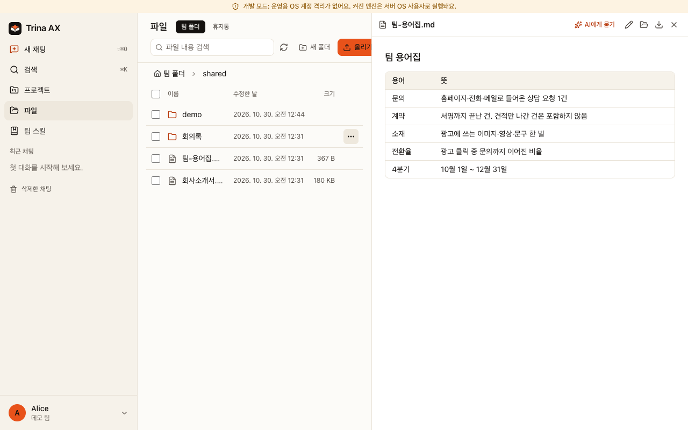

Trina AX — 설치 안내
Linux 운영 설치는 systemd·cgroup v2가 필요합니다. Mac 사무실 설치와 역할 계정 설치는 보안 경계가 다릅니다.
권한 → AI 연결 → 팀원 초대 → 첫 스킬 → 첫 백업 순서로 시작하세요.
새 팀의 구독 공유는 기본 켜짐이며 기존에 저장한 선택은 유지됩니다. 개인 연결이 우선이고 연결별 동의가 필요합니다. 소프트웨어 설정이 제공사 약관상 허가를 뜻하지는 않습니다.
현재 절차와 문제 해결 읽기 (한국어) · English IT guide · 최신 릴리스

개발 모드·가상 자료·AI 호출 없음
문서·파일은 서버에 저장되지만 필요한 문맥은 AI 제공사로 전송됩니다. 서버 운영자는 저장 자료를 읽을 수 있습니다. 자세한 운영 명령은 위의 버전 관리되는 Markdown 안내에서 유지합니다.